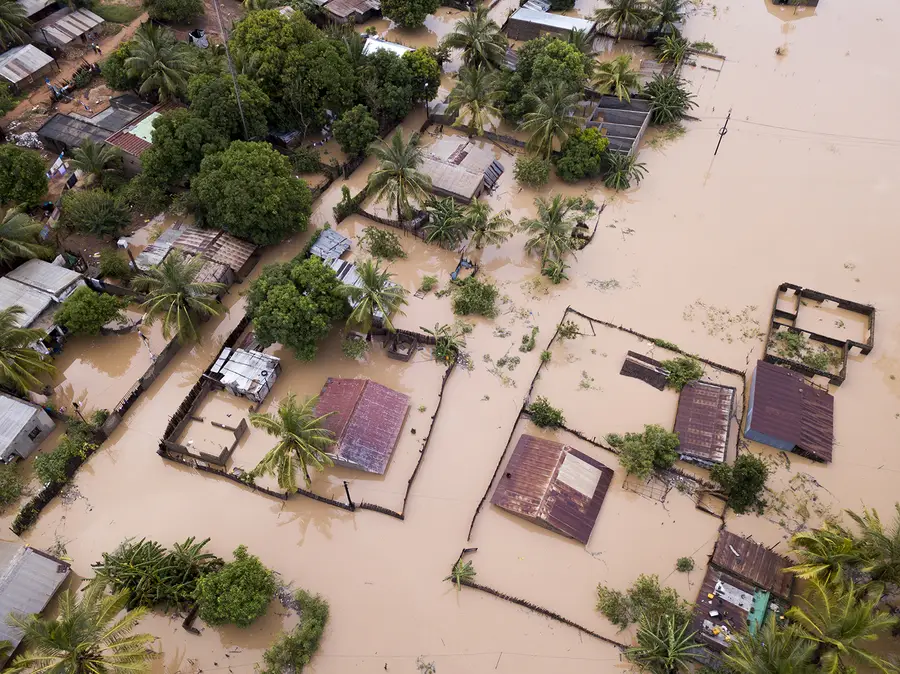
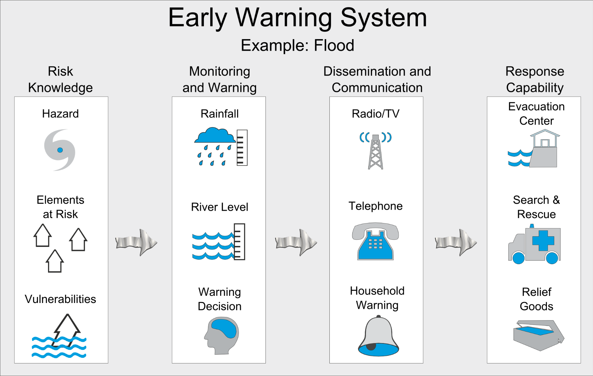
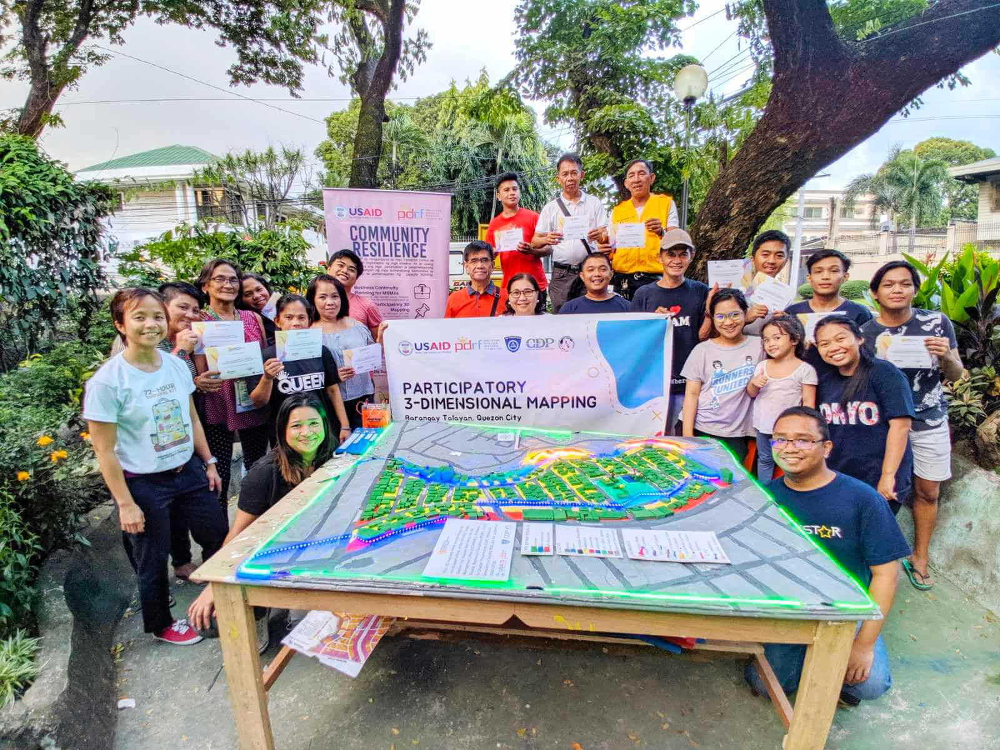
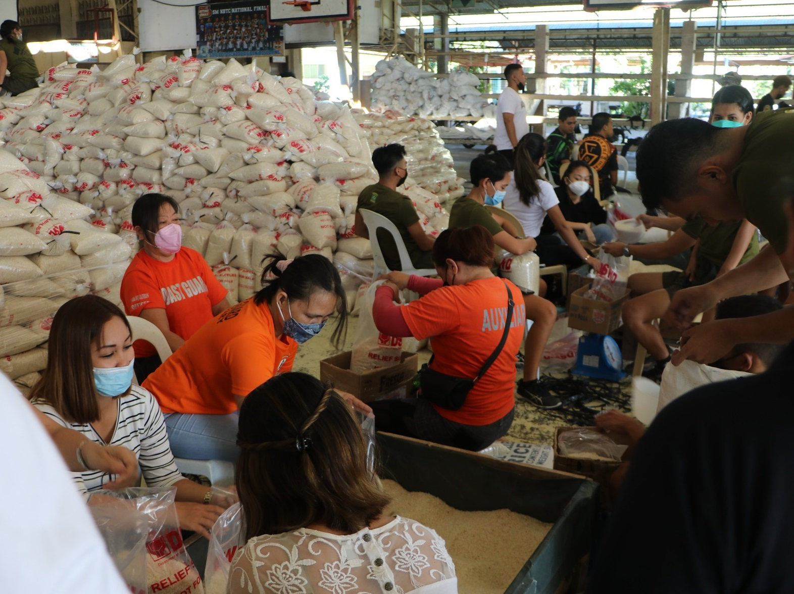

Disaster Risk Management
Cebu has been proactive in implementing disaster risk reduction and management strategies to mitigate the effects of natural calamities and ensure the safety of its citizens. Through infrastructure enhancements, early warning systems, and community preparedness programs, Cebu is better equipped to face future challenges.
Key Initiatives
- Building resilient infrastructure in flood-prone areas
- Disaster preparedness training for local government units
- Introduction of early warning systems and evacuation plans
Building resilient infrastructure in flood-prone areas is essential to minimize damage during natural disasters.
Communities benefit greatly from planning and constructing flood-resistant buildings and drainage systems.

Disaster preparedness training for local government units equips officials with the skills needed to respond effectively during emergencies.
Such training enhances the capacity of local governments to protect communities and save lives in times of crisis.

The introduction of early warning systems and evacuation plans significantly reduces the risks posed by natural disasters.
Communities with well-established warning systems and evacuation strategies are better prepared to ensure safety and minimize loss of life.

Future Plans
- Strengthening community-based disaster management programs
- Improving the accessibility of relief efforts in remote areas
- Enhancing climate change adaptation programs
Strengthening community-based disaster management programs empowers local residents to take proactive measures during emergencies.
These programs foster collaboration and resilience, ensuring that communities are well-prepared to face potential hazards.

Improving the accessibility of relief efforts in remote areas ensures that vulnerable populations receive timely assistance during disasters.
Effective logistics and transportation systems are key to reaching isolated communities with essential supplies and services.

Enhancing climate change adaptation programs helps communities build resilience against the increasing impacts of global warming.
These programs promote sustainable practices and innovative solutions to mitigate environmental challenges.